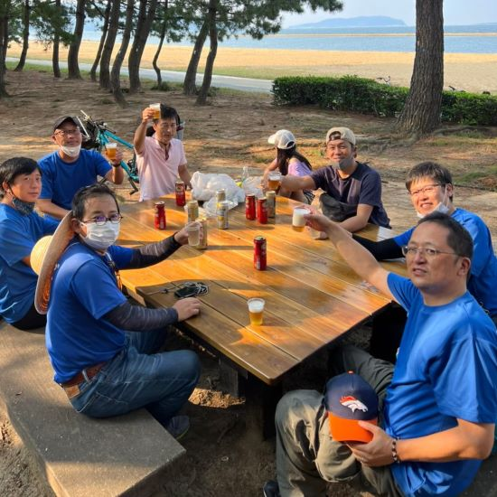
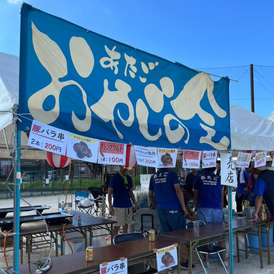
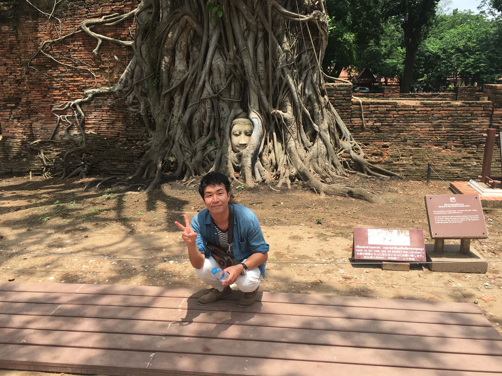

Gallery
活動の一部にはなりますが、現役・OBを含めたメンバーの活躍をご紹介します。
力作業が多い印象ですが繊細さを求められる作業・活動もあり、各メンバーの長所を生かしたチームワークで日々活動しております。
皆様のご協力をいただき、2009年より"愛宕おやじの会"は福岡市立愛宕小学校、およびPTA、また愛宕校区自治会行事等のサポートを行っております。



令和6年度
愛宕おやじの会 会長
福岡市西区の愛宕小学校のおやじの会です。
当会は「ちからを抜いてフルスイング！」をモットーに、愛宕小学校校区での小学校や地域行事での活動を行っています。
具体的には運動会、夏祭り、小学校清掃、餅つき、小学校との懇談会等で活躍しています。
時にはお酒を飲んで語り合う、とてもゆるいつながりの会であり、無理のない範囲で参加・活動しております。
当会につきまして少しでも興味がある方、気になるイベントのサポート役をしたい方、入会するよ！という方は、ホームページの『入会案内』から資料をダウンロードし、必要事項を記入の上、学校へ提出してください。
随時、新しいおやじの仲間を募集しておりますので、気軽に「大石」までお声がけください。
活動の一部にはなりますが、現役・OBを含めたメンバーの活躍をご紹介します。
力作業が多い印象ですが繊細さを求められる作業・活動もあり、各メンバーの長所を生かしたチームワークで日々活動しております。
愛宕おやじの会について簡単に説明を記載します。
愛宕小学校、PTA、愛宕校区自治会とともに、子供たちの成長を支援しつつ、 「壁となり守る」、「共に学び、共に遊ぶ、共に楽しむ」を活動方針としております。 また「無理なく、できる範囲で果たせることを果たせる時に」行ってまいります。
運動会では警備、駐輪場整理、後片付けなどを支援しております。 また学校周辺の清掃、運動場・体育館の整備、連休中の飼育係代行なども先生と協力して行っています。 地域活動においては夏祭りにおける出店、各種イベント（健康ウォーキング、どんと焼き、清掃、餅つきなど）を支援しております。 有志によるイベント企画・実施（キャンプ、山登り、プール、海水浴など）も行っています。
本年度、新しく３名の入会を承認し、現役25名、OB複数名で活動を行っております。 PTA活動またはそれに準じた活動、自治会支援のための地域組織であり、任意のボランティア団体という位置づけになります。
日頃の活動は会長を中心に、学校の先生方、PTA、自治協議会と協議しながら進めております。 おやじ同士も活動単位に打ち合わせ、確認を行い活動に不備がないよう務めております。 ただメンバーは多種多様な仕事を持ち、家庭もおろそかにはできないため、基本的には活動方針にも記載しましたが、 「無理なく、できる範囲で果たせることを果たせる時に」をコンセプトに活動してまいります。
イベント前の打ち合わせ等は愛宕公民館を利用しております。 公民館を使用できない時間帯は「スポーツ ＆ 居酒屋 るーご」を利用させていただきます。 「るーご」についてはイベント準備時のサポートから、打ち上げ時のお店提供など様々な形で協力をいただいております。 以下、お店の情報となります。